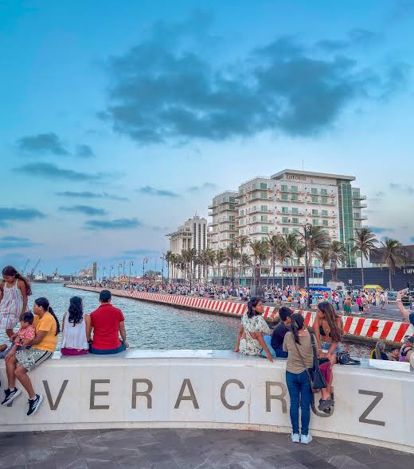

LUGAR TURISTICOS

1. Malecón de Veracruz: 1.3 km de paseo junto al mar. Ahí está el Faro Venustiano Carranza, vendedores, danzoneros y vista a los barcos mercantes. Vida nocturna y familiar.

2. San Juan de Ulúa: Fortaleza del siglo XVI en un islote. Fue fuerte, cárcel y palacio presidencial. Estuvo preso "Chucho el Roto". Leyendas de piratas y pasadizos. Entrada $90 MXN.